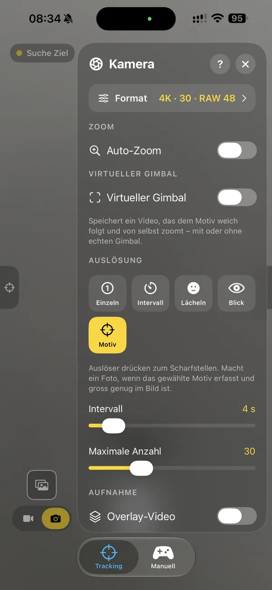

Coole Videos und spontane Schnappschüsse – mit intelligenter Motivverfolgung, einfacher Bedienung und unterstützten Gimbals.
Dokumentation lesenBis zu 60 Sekunden gratis filmen. Keepsight ist zurzeit im Betatest und noch nicht im App Store erhältlich.
So funktioniert es
Motiv wählen
Wähle, wem oder was die Kamera folgt: einer Person oder einem Gesicht, mit Pro auch Tieren, Fahrzeugen oder Flugzeugen.
Tracking starten
Keepsight hält dein Motiv im Bild. Ein unterstützter Gimbal dreht das iPhone mit; ohne Gimbal folgt der virtuelle Gimbal innerhalb des Bilds.
Festhalten, was zählt
Filme oder fotografiere per Tipp, Handzeichen oder Stimme.
Gemacht für deine Momente
Creator und Freunde
Vom ersten Vlog bis zu spontanen Momenten mit Freunden: Keepsight hilft, das Geschehen im Bild zu halten. Wähle, was zählt, filme ganz natürlich und hab mehr Spass an deinen Alltagsvideos, ohne dass jede Aufnahme zum Technikprojekt wird.
Die Momente, die bleiben sollen, sind schnell vorbei: ein Familienausflug, gemeinsames Lachen, ein Tag draussen. Keepsight macht Videos und spontane Schnappschüsse einfacher, damit du im Moment bleibst, während das Tracking beim Bildausschnitt hilft. Mit Keepsight Pro löst die App sogar von selbst aus, wenn alle lächeln.
Bewegte Motive ergeben Clips, die in Erinnerung bleiben. Folge einer Velofahrerin oder einem Läufer mit einem unterstützten Gimbal und wähle, wie schnell die Kamera reagiert. Wie gut es klappt, hängt von Tempo, Entfernung, Licht und deinem Gimbal ab.
Haustiere und Wildtiere halten selten still. Keepsight folgt Tieren in Bewegung und hält das Geschehen fest. Sehr schnelle oder unberechenbare Vögel können allerdings schneller sein, als dein Gimbal drehen oder das iPhone sie erkennen kann.
Hol mehr aus einer Kamera auf dem Gimbal. An einem unterstützten DockKit-Gimbal oder am FeiyuTech AK4500 arbeitet das iPhone als intelligenter Tracking-Assistent, während deine Kamera die eigentliche Aufnahme selbst macht.
Mehr Kontext zum Flugzeug, das du filmst. Keepsight folgt Flugzeugen nach Sicht. Mit deinem eigenen lokalen ADS-B-Empfänger kann es zusätzlich Flugdaten ins iPhone-Video einblenden, in Ländern, in denen diese Funktion freigegeben ist. Derzeit ist keine Region freigegeben.
Die Fotos auf dieser Seite sind Illustrationen. Sie sind keine Bildschirmfotos der App und kein Nachweis für kompatible Geräte.
Was Keepsight für dich übernimmt
Nachführen
Wähle ein Motiv: Person, Gesicht, Flugzeug, Vogel, Tier, Fahrzeug, Zug oder Boot. Keepsight hält es in der Bildmitte und steuert den Gimbal. Verdeckt eine Wolke das Flugzeug, rechnet die App die Bahn kurz weiter.
Zoomen
Der Auto-Zoom hält das Motiv in der Grösse, die du einstellst. Er bewegt sich in winzigen Schritten und bleibt im gewählten Objektiv, damit das Video nie springt.
Rahmen
Der virtuelle Gimbal speichert ein zweites Video, dessen Ausschnitt dem Motiv weich folgt und von selbst zoomt. Das funktioniert auch ohne Gimbal aus der Hand.
Auslösen
Mit Keepsight Pro fotografiert die App von selbst, wenn alle lächeln, wenn alle zur Kamera schauen oder wenn das Motiv gross genug im Bild ist. Intervallserien, Handgesten und Sprachbefehle mit Countdown gehören schon zur Gratisversion.
Die volle Kamera deines iPhones
4KVideo mit 24, 25, 30 oder 60 Bildern pro Sekunde
48 MPFotos mit der Hauptkamera, als HEIF oder ProRAW
3Objektive: Ultraweitwinkel, Hauptkamera und Tele
So sieht die App aus
Leiste Tracking mit Motiv, Geschwindigkeit und Fernsteuerung, hier mit Hilfemodus

Leiste Kamera: Format, Zoom, virtueller Gimbal, AuslösungFormat im Video-Modus
Gratis ausprobieren, einmal kaufen
Mit der Gratisversion testest du alles an Personen. Keepsight Pro schaltest du mit einem einmaligen Kauf frei, ohne Abo. Der App Store zeigt den Preis in deiner Währung.
Funktion
Gratis
Pro
Person und Gesicht verfolgen
Ja
Ja
Gesten, Sprachbefehle, Countdown
Ja
Ja
Auto-Zoom und virtueller Gimbal
Ja
Ja
Gimbal-Steuerung mit Apple DockKit
Ja
Ja
4K-Video und 48-MP-Fotos
Ja
Ja
Automatisches Auslösen: Lächeln, Blick, Motiv
Nein
Ja
Flugzeug, Vogel, Tier, Fahrzeug, Zug, Boot
Nein
Ja
Rahmen um ein beliebiges Objekt ziehen
Nein
Ja
Video bis 60 Sekunden, mit Logo
Ja
Ja
Pro-Tracking zum Testen: 3 × 60 Sekunden
Ja
Ja
Unbegrenzte Aufnahme ohne Logo
Nein
Ja
Zweites Video mit Rahmen und Daten
Nein
Ja
Fotos in ProRAW
Nein
Ja
In der Gratisversion sind Videos auf 60 Sekunden begrenzt und tragen das Keepsight-Logo.
Keepsight gratis ausprobieren
Videos bis 60 Sekunden mit Keepsight-Logo, so oft du willst.
Pro-Tracking zum Testen: 3 Durchgänge à 60 Sekunden mit einem Pro-Motiv deiner Wahl.
Teste dein Motiv und deinen Gimbal vor dem Kauf.
Keepsight Pro
Einmal kaufen. Dauerhaft freischalten. Keine laufenden Abo-Kosten.
Keepsight ist zurzeit im Betatest und noch nicht im App Store erhältlich.
Geplant zum Start im Schweizer App Store: CHF 14.90 als Einmalkauf bis einschliesslich 31. März 2027, CHF 19.90 ab 1. April 2027.
Preise in Schweizer Franken gelten für den Schweizer App Store. In anderen Ländern zeigt der App Store den Preis in deiner Währung.
Fragen und Antworten
Zahle ich einmal oder laufend?
Einmal. Keepsight Pro ist ein Einmalkauf, ohne Abo und ohne laufende Kosten.
Was kann ich gratis tun?
Personen und Gesichter verfolgen, Gesten, Sprachbefehle, Auto-Zoom und den virtuellen Gimbal nutzen und Videos bis 60 Sekunden mit Keepsight-Logo filmen. Dazu kannst du das Pro-Tracking dreimal 60 Sekunden lang testen.
Wie stelle ich meinen Kauf wieder her?
Öffne in der App die Pro-Seite und wähle das Wiederherstellen des Kaufs. Du musst mit dem Apple Account angemeldet sein, mit dem du gekauft hast.
Warum ist der Preis in meinem Land anders?
Apple legt den Preis je Land und Währung fest, inklusive Steuern. Es gilt der Preis, den dein App Store anzeigt.
Funktioniert Keepsight ohne Internet?
Ja. Erkennung und Tracking laufen auf dem iPhone. Internet braucht es nur für den Kauf.
Was passiert mit meinen Bildern?
Sie bleiben auf deinem iPhone. Keepsight hat kein Konto, keine Werbung und keine Analyse-Dienste.
Nimmt Keepsight mit meiner grossen Kamera auf?
Nein. Keepsight steuert den Gimbal; die Kamera darauf nimmt selbst auf. Keepsights eigene Fotos und Videos kommen von der iPhone-Kamera.
Gibt es Live-Flugdaten dort, wo ich wohne?
Nur in freigegebenen Ländern und Regionen, und es braucht deinen eigenen ADS-B-Empfänger und die Standortfreigabe. Derzeit ist keine Region freigegeben.
Kann Keepsight schnellen Vögeln folgen?
Nicht immer. Sehr schnelle oder unberechenbare Tiere können schneller sein, als der Gimbal drehen oder das iPhone sie erkennen kann.
Was du brauchst
iPhone
Ein iPhone mit iOS 17 oder neuer. Entwickelt und getestet wird auf dem iPhone 15 Pro Max mit drei Kameras.
Gimbal
Zum Nachführen einen Gimbal oder Ständer mit Apple DockKit, zum Beispiel Insta360 Flow 2 Pro, DJI Osmo Mobile 8 oder Belkin Auto-Tracking Stand Pro. Der FeiyuTech AK4500 für Systemkameras wird ebenfalls unterstützt. Kamera, Auslösung, Gesten, Sprache und der virtuelle Gimbal funktionieren auch ohne Gimbal.
Sprachen
Die App spricht 21 Sprachen: Deutsch, Englisch, Französisch, Italienisch, Spanisch, Portugiesisch, Niederländisch, Schwedisch, Polnisch, Russisch, Ukrainisch, Türkisch, Arabisch, Hindi, Indonesisch, Vietnamesisch, Thai, Japanisch, Koreanisch und Chinesisch (vereinfacht und traditionell).